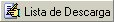
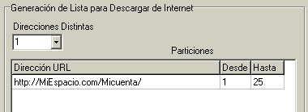

| ¿Que
es una Lista de descarga?
Las listas de descarga son archivos de texto en los cuales se
almacena, una lista de direcciones URLs de archivos que nosotros
hayamos subido a algún espacio o servidor en Internet.
La
finalidad de estas listas es que se introduzcan en algún
gestor de descarga, para descargar todos los archivos que contenga
esa lista a tu disco duro. Esas listas son muy usadas por los
usuarios de Internet y es por eso que el kamaleon trae su propio
generador de listas de descarga, y funciona como se muestra a
continuación.
Lo primero que tienes que hacer es pulsa el botón
 ,
lógicamente la lista de descarga que generaremos será
de una serie de archivos que fueron particiónados
anteriormente con el kamaleon, y que lógicamente ya están,
o los alojaras en un servidor de Internet. Es por eso que lo
primero que nos aparece después de pulsar el botón
anterior será una caja para buscar el Ultimo Archivo de
las Particiones, como la que se muestra a continuación.

Damos en Abrir
y buscamos ese archivo, esto ya se explico detalladamente en la
sección de Unir. Una vez encontrado dicho archivo, que es
el que contiene toda la información necesaria de las
particiones, para generar la lista de descarga.
Luego presionamos el botón
 ,
y nos
aparecerá una interfase muy sencilla de usar, pero muy
útil para la generación de la lista. Aquí le
diremos al programa la Dirección URL donde se
encuentran alojados los archivos, por ejemplo: ,
y nos
aparecerá una interfase muy sencilla de usar, pero muy
útil para la generación de la lista. Aquí le
diremos al programa la Dirección URL donde se
encuentran alojados los archivos, por ejemplo:
http://MiEspacio.com/Micuenta/
No olvides
poner la ultima diagonal, ya que después de ese texto el
kamaleon le agregara el nombre de cada archivo, entonces generara
una lista como la siguiente:
http://MiEspacio.com/Micuenta/Documento001.jpg
http://MiEspacio.com/Micuenta/Documento002.jpg
.
.
.
http://MiEspacio.com/Micuenta/Documento024.jpg
http://MiEspacio.com/Micuenta/Documento025.jpg

En caso de
que hayas subido la mitad de los archivos en una cuenta, y la otra
mitad en otra, solo incrementas la caja de Direcciones
Distintas, y rellena las casillas Desde y Hasta,
para que el kamaleon entienda que dirección ponerle a cada
archivo y generar la lista.
Finalmente presionamos botón de
 ,
y el kamaloen
nos pide que elijamos un directorio para grabar la lista. La lista
es un archivo de texto común y corriente, lo puedes grabar
con extensión "txt" o "lst", yo
prefiero esta ultima ya que casi todos los gestores de descarga así
las reconocen. ,
y el kamaloen
nos pide que elijamos un directorio para grabar la lista. La lista
es un archivo de texto común y corriente, lo puedes grabar
con extensión "txt" o "lst", yo
prefiero esta ultima ya que casi todos los gestores de descarga así
las reconocen.
|